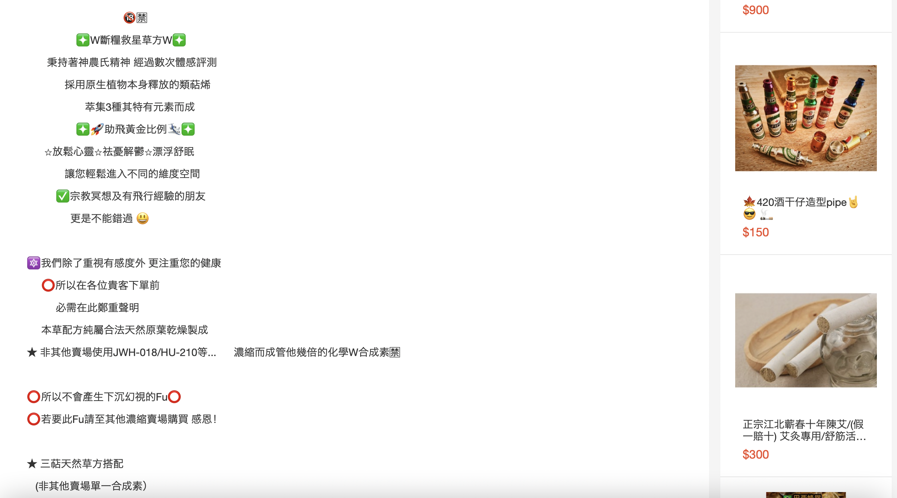
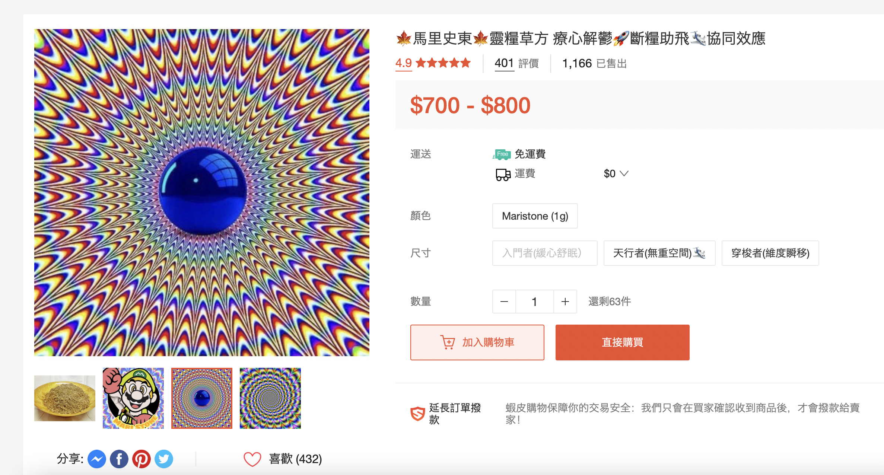
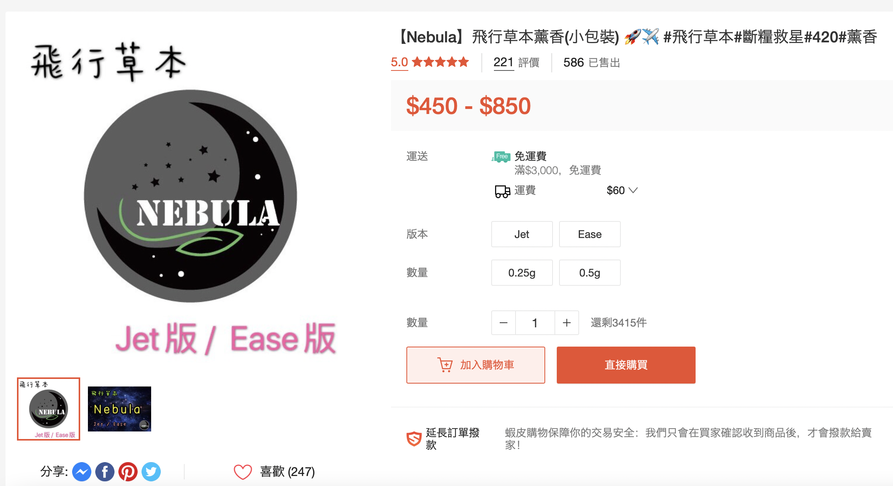
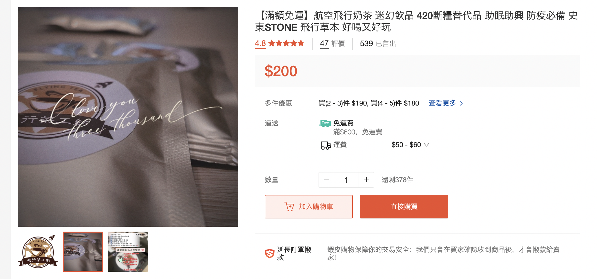

台灣賣家如何透過電商平台販售墨西哥鼠尾草等迷幻草本
「墨西哥鼠尾草」（Salvia divinorum）在今年九月初數度登上新聞版面。多家媒體報導指出，該種藥草具致幻效果，吸食後容易產生暈眩、嘔吐、心悸等生理反應，卻能在網路商家輕易取得。報導中，多位醫學專家與政府官員考量其危險效果、易成癮性，呼籲政府應將墨西哥鼠尾草視作毒品列管。
在現階段藥草尚未列管的情況下，賣家握有完整資訊，應該在販賣時向買家溝通可能的風險。然而點進蝦皮商城（台灣其中一個販賣墨西哥鼠尾草的電商平台），我們發現多數賣家經常以神秘化的文案進行行銷；且前述新聞報導集中討論的墨西哥鼠尾草，在同種類商品中僅佔少數。多數賣家以諸如「飛行草本」等名義，販售成分不明的藥草，不少商品頁面已有上千銷售量。
不透明的資訊，使買家承擔風險，也可能使未來列管更加困難。
本文分析蝦皮商城上八家產品銷售量超過 100 的草本賣家，從販售草本的商品頁面觀察其行銷文案與販售手法，歸納出三個現象。
在商品頁面中，幾乎不會看到任何關於成分、使用方式的說明。買家只會知道該商品能夠達到「起飛」、「放鬆」效果。網路論壇 Reddit 上曾有人討論，一種常見的「斷糧」草本其實為合成大麻素，這些資訊，買家都沒有透明的管道在購買前得知。
許多賣家會在標題中使用「靈糧」、「薩滿」、「儀式」等關鍵字，加強產品的宗教成分，淡化使用迷幻草藥的危險性。
不少賣家將迷幻藥草混入薰香、茶包、餅乾、巧克力等食品，在呈現上更貼近生活，也能在商品說明中避免提到迷幻草藥本身的特性。
 